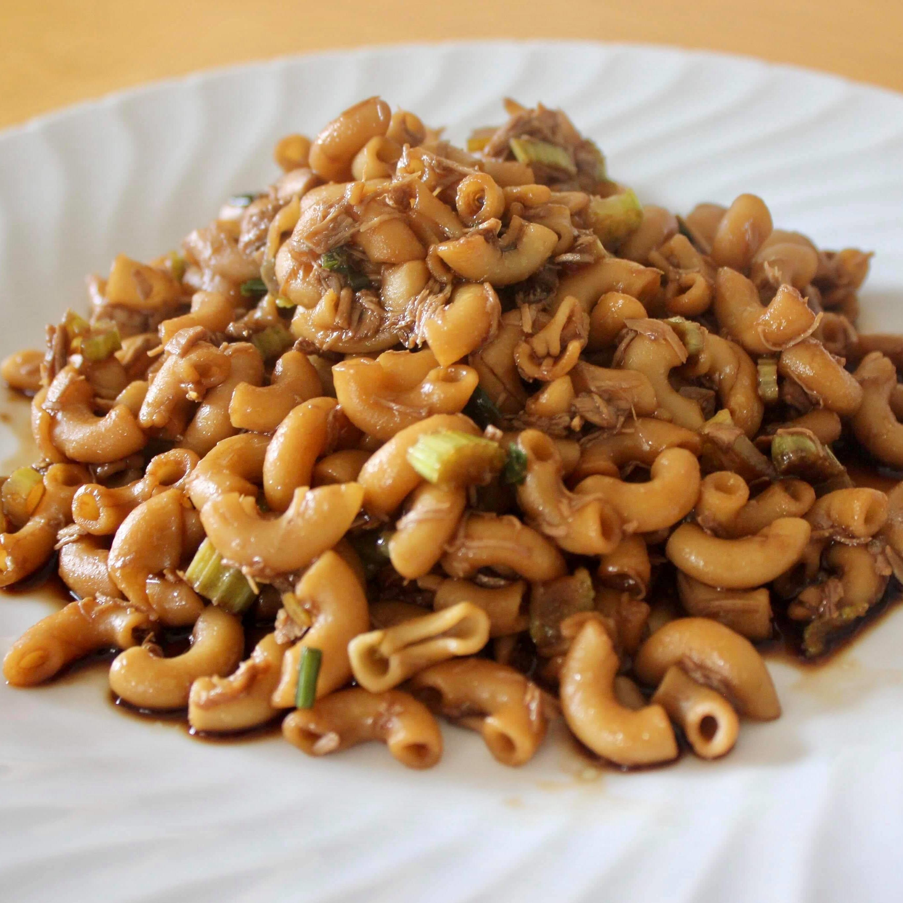

Chinese Macaroni

Description
Chinese macaroni is a dish that incorporates macaroni pasta in Chinese cuisine.
It typically features Chinese flavors and ingredients, making it distinct from Western-style macaroni dishes.
Ingredients
- Macaroni pasta
- Vegetables (such as bell peppers, carrots, and peas)
- Protein (chicken, pork, or shrimp)
- Soy sauce
- Oyster sauce
- Garlic and ginger (for flavor)
- Sesame oil
- Green onions (for garnish)
Steps
- Cook the macaroni pasta according to package instructions. Drain and set aside.
- In a wok or large pan, heat some oil over medium-high heat.
- Add minced garlic and ginger to the hot oil and sauté until fragrant.
- Add the protein (chicken, pork, or shrimp) and cook until browned and cooked through.
- Add the chopped vegetables and stir-fry until they are tender but still crisp.
- Toss in the cooked macaroni pasta and mix well with the other ingredients.
- Season the dish with soy sauce, oyster sauce, and a dash of sesame oil. Adjust the seasoning to taste.
- Continue to stir-fry until everything is well combined and heated through.
- Garnish with chopped green onions before serving.